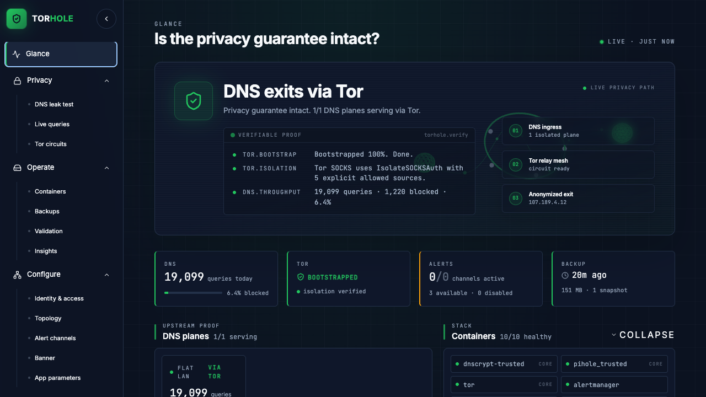
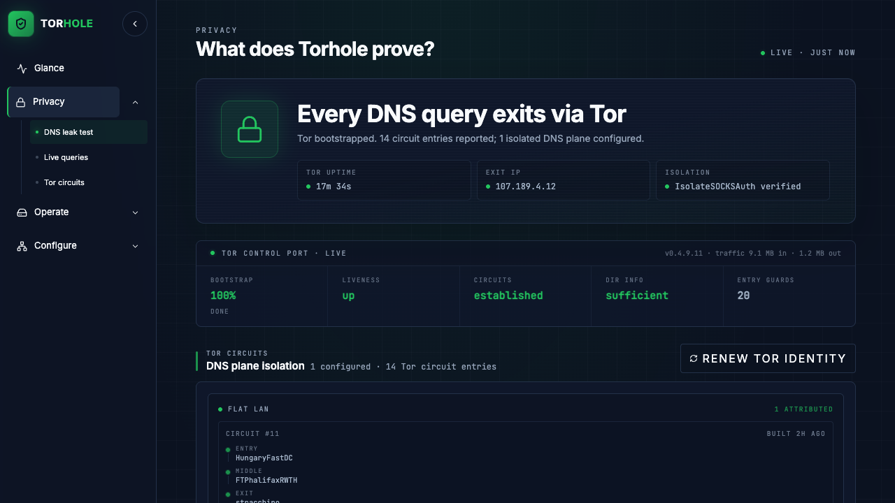

Pi-hole blocking · encrypted DNS · enforced Tor egress
Your router asks an upstream resolver to translate every hostname your
devices reach. That resolver, along with your ISP, can tie each
question back to your household address and build a profile over time.
Encrypting the query hides its contents, not its origin.
Torhole breaks the link between the question and you. The resolver still
answers, but it sees a Tor exit, not your public IP. Filtering and
encryption come along for the ride.
// Ordinary web, video, and app traffic keeps its normal route. Only DNS takes this path.
It deliberately protects the DNS path and nothing wider. Naming what it doesn't do is how you can trust what it does.
For households and first-time self-hosters who want one clear proof and safe controls.
For homelabs and operators on flat LAN or isolated Trusted/IoT VLAN planes.
Torhole records the observed Tor exit, asks the Tor Project whether that address is a relay, and keeps the result. Unlabelled circuits stay unlabelled. The interface doesn't invent certainty.

Real interfaceNo mock data. No invented state.

The bootstrap downloads Torhole, asks once for host authorization, and opens a private setup URL where you choose Home or Advanced and watch it deploy. Raspberry Pi 5 is the reference small-device platform.
Prefer to read it first? curl -fsSLO …/get-torhole.sh then less get-torhole.sh.
The traditional git clone → ./install.sh flow starts the same installer.
Run the check. Read the exit. Confirm it's Tor.